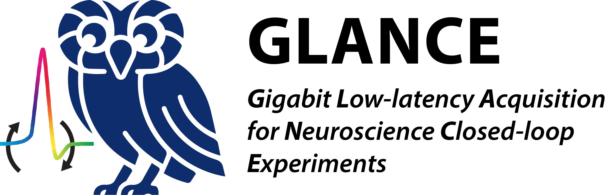
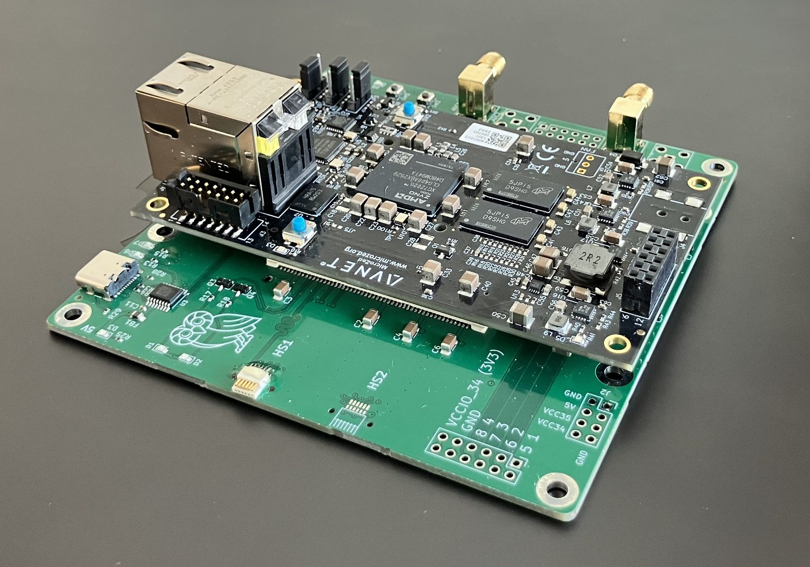

256 channels at 30 kS/s

GLANCE — Gigabit Low-latency Acquisition for Neuroscience and Closed-loop Experiments — is an open-source electrophysiology system. It records from Intan RHD2000-style neural chips on a MicroZed (Xilinx Zynq-7020) with a custom carrier board: the programmable logic talks to up to two cables of amplifiers over a DDR SPI protocol, and the processor streams the data to your host over gigabit Ethernet.
It is built for experiments that have to react. Every 30 kHz sample leaves the board as its own UDP datagram — never batched, never held for a bigger packet — so nothing on the acquisition side stands between a spike and your detector. Per-stream sequence numbers make packet loss provable rather than suspected.
The firmware, the FPGA design, the carrier PCB and the Open Ephys plugin are all open, and all developed in the open.